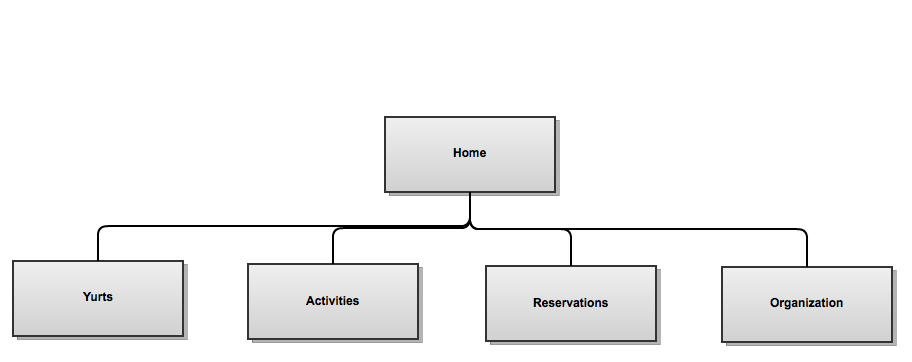

Organization Used
Do you feel the image above is appropriate?
The Hierarchical Organization site map I created justify's my methodology in how the site was designed. I chose to use this site map because the site is relatively small, allowing for this site map to display how the site is organized and easily navigated using the navigation bar. More complex sites would be more difficult to display in this type of organization structure.
My favorite options using this organization chart are:
Pro's
- Allows for simplicity
- Display's all of the pages on your website
- Straight to the point
Con's
- Have too many pages and your site will look cluttered
- Have too many pages within pages, your site may not follow the three-click-rule
Back to top